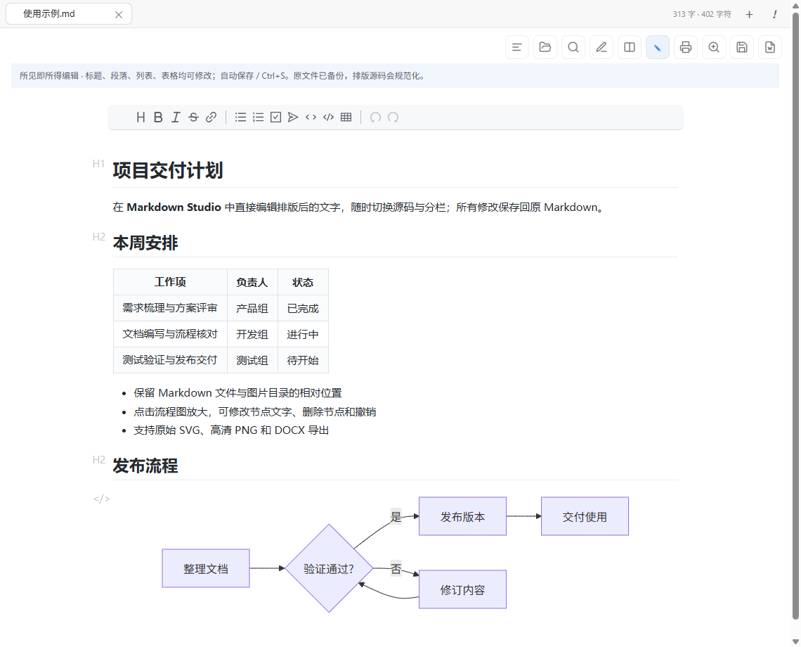
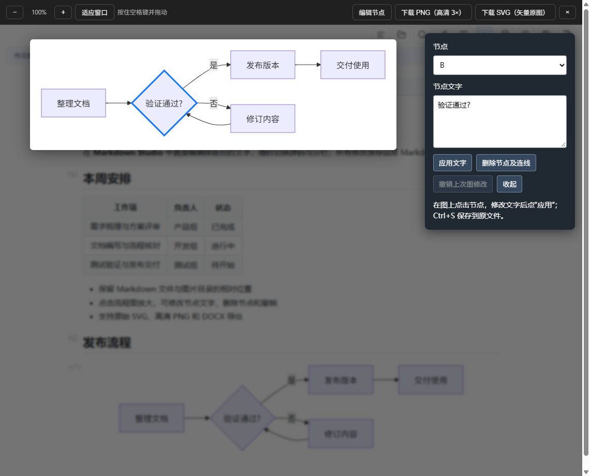

v1.9.10 · Windows x64
阅读、编辑和交付 Markdown 文档。在排版后的内容上改字，在分栏中对照源码，直接修改流程图节点，再导出 DOCX 或 PDF。
下载可直接运行的 Windows EXE 完整使用说明系统需具备 WebView2 Runtime；无需另外安装 VC++ Runtime、Node、Python 或 Rust。程序暂未签名，运行前请核对 SHA-256。EXE 保留兼容文件名 MD-Preview-windows-x64.exe。
标题、段落、列表、引用和表格直接修改，自动保存 / Ctrl+S，进入前备份原文。
左预览、右源码独立滚动，按位置对应；查找替换和光标跳转将对应内容带入屏幕。
在放大窗口点选 flowchart/graph 节点，改文字、删节点及关联连线，或撤销图修改。
DOCX 表格固定列宽与实线边框；保留 SVG 原图和 3 倍 PNG 下载。直接导出 PDF 需要 Edge 或 Chrome。

